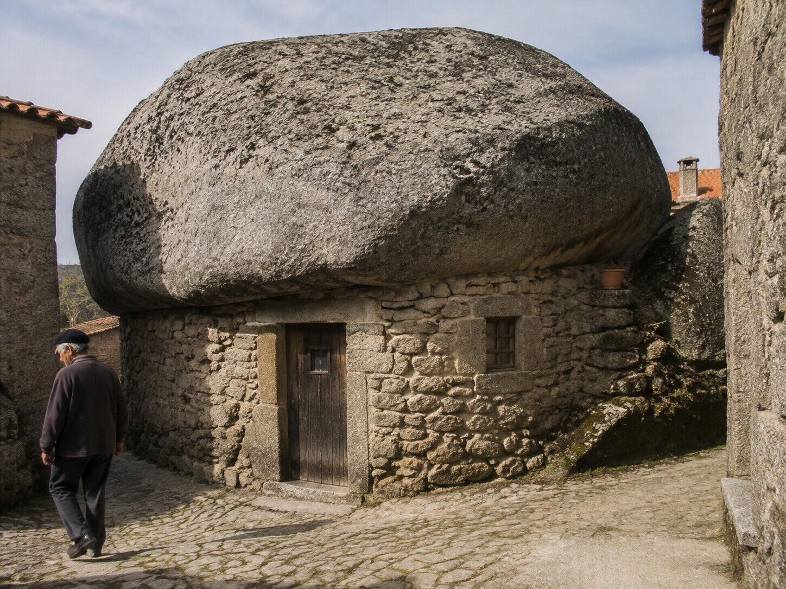
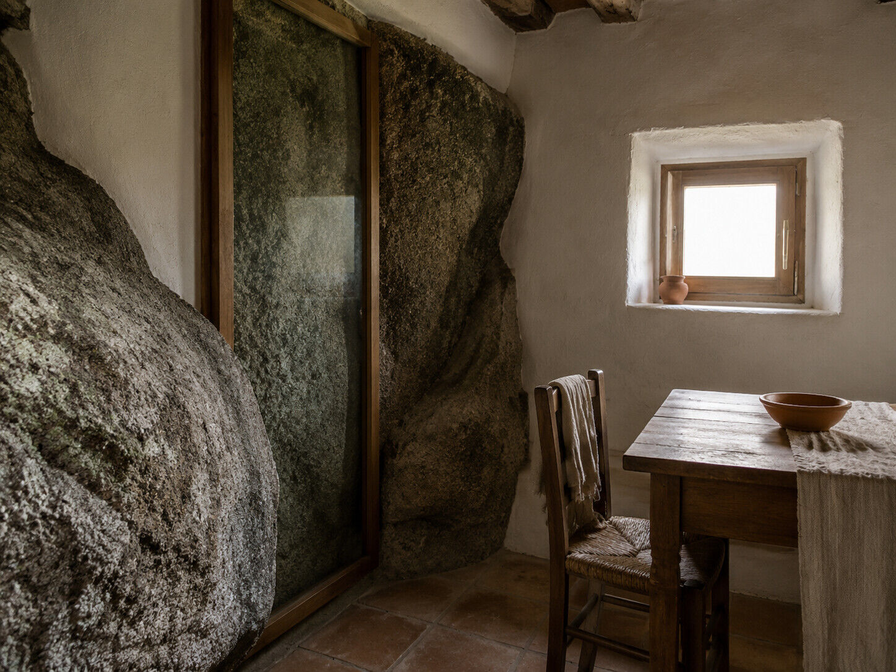

În partea de sus a străzii Rua do Castelo, o casă pare să fi pierdut o dispută cu muntele. Zidurile ei se opresc sub un bloc uriaș de granit, atât de mare încât acoperă aproape întreaga construcție. Privită în grabă, scena seamănă cu urmarea unui accident geologic: bolovanul a căzut, casa a rămas dedesubt și nimeni nu a mai îndrăznit să miște ceva.
Numai că piatra nu a venit peste casă. Casa a fost ridicată sub ea.
Locuitorii din Monsanto i-au găsit construcției un nume mai bun decât ar fi reușit orice catalog de arhitectură: casa de uma só telha, casa cu o singură țiglă. Țigla este, desigur, stânca. Nu se sparge la grindină, nu alunecă de pe acoperiș și nu poate fi schimbată de un meșter într-o după-amiază. Este o bucată din munte, acceptată ca parte a locuinței.
Această singură țiglă spune aproape toată povestea satului.

Un loc construit după forma obstacolelor
Monsanto se află în interiorul Portugaliei, în regiunea Idanha-a-Nova, aproape de granița cu Spania. Satul urcă pe versantul unui deal abrupt al cărui punct cel mai înalt ajunge la 758 de metri. Deasupra caselor se află ruinele castelului; dincolo de ele, câmpia. Între cele două există granitul: blocuri rotunjite, fisuri, platforme naturale și spații atât de neregulate încât ideea unei străzi drepte pare o glumă spusă de cineva de la șes.
Într-un loc obișnuit, constructorul eliberează terenul și apoi ridică o clădire. La Monsanto, terenul nu putea fi convins atât de ușor. Stâncile erau prea mari pentru a fi mutate, iar suprafețele plane erau puține. Soluția nu a fost să se redeseneze dealul, ci să se deseneze fiecare casă în jurul porțiunii de deal pe care o primea.
Uneori, un bolovan formează un perete întreg. Alteori, două pietre lasă între ele un gol care poate fi închis cu zidărie. O stâncă ieșită în afară devine o parte din acoperiș. La baza unor blocuri s-au format adăposturi folosite cândva pentru animale. Pereții construiți de oameni nu ascund întotdeauna granitul; se termină pur și simplu acolo unde începe el.
De aceea casele nu urmează un model unic. Fiecare este răspunsul la altă întrebare pusă de relief: cât spațiu a rămas între pietre, unde poate fi deschisă o ușă, ce poate susține un zid și ce este mai înțelept să rămână neatins. Privit de sus, satul pare așezat printre bolovani. Privit de aproape, devine limpede că bolovanii participă la construcție.
Nu este o tehnică spectaculoasă inventată pentru vizitatori. Este arhitectură fără luxul foii albe.
Dealul care a fost și fortăreață
Avantajele unui asemenea loc nu s-au limitat la materialele de construcție. Dealul domina împrejurimile și putea fi apărat. În zonă există urme ale prezenței umane încă din paleolitic, precum și vestigii atribuite unei așezări fortificate lusitane, ocupației romane și perioadelor vizigotă și arabă. Istoria exactă are golurile ei, dar poziția locului nu are nevoie de explicații complicate: de sus se vede departe, iar până sus se ajunge greu.
În 1165, regele Afonso Henriques a încredințat Monsanto Ordinului Templierilor, care a ridicat fortificații pe culme. Satul medieval s-a organizat sub zidurile castelului, coborând pe versant atât cât îi permiteau piatra și panta. Aici, geografia a hotărât deopotrivă apărarea, traseul ulițelor și conturul bucătăriilor.
Castelul a pierdut în timp părți din ziduri și turnuri, inclusiv în urma exploziei accidentale a unui depozit de muniții în secolul al XIX-lea. Granitul de sub el a rămas. Este una dintre micile ironii ale locului: construcția militară concepută să reziste a devenit ruină, în timp ce bolovanii pe care oamenii i-au tratat ca pereți continuă să țină umbră deasupra caselor.
Frumos de privit, incomod de locuit
Fotografiile transformă foarte ușor Monsanto într-o poveste despre ingeniozitate perfectă. Piatra pare să se potrivească exact, casele par crescute din munte, iar ulițele înguste capătă aerul unui decor pregătit cu grijă. Dar soluțiile bune pentru un sat vechi, construit pe un relief abrupt, nu sunt automat bune pentru viața contemporană.
O casă adaptată unui bolovan nu poate fi reorganizată ca un apartament. Un perete natural nu se mută pentru a lărgi camera. O scară dictată de pantă nu devine mai puțin abruptă pentru că locuitorul îmbătrânește. Ferestrele, instalațiile și mobilierul trebuie să negocieze cu forme care nu cunosc unghiul drept. Ceea ce în fotografie pare organic poate deveni, într-o zi obișnuită, pur și simplu incomod.
Chiar rețeaua locală a satelor istorice descrie aceste soluții drept bine adaptate geografiei accidentate, dar nepotrivite multor așteptări moderne de confort. Formularea merită păstrată. Ea împiedică transformarea satului într-o lecție siropoasă despre cât de ușor trăiau oamenii „în armonie cu natura”. Nu trăiau într-o metaforă. Trăiau într-un spațiu disponibil și îl făceau utilizabil.
Adaptarea continuă și astăzi, doar că instrumentele s-au schimbat. În unele case restaurate, porțiuni din vechii pereți de piatră au fost păstrate în spatele unor suprafețe transparente, ca niște ferestre orientate nu spre peisaj, ci spre însăși materia casei. Este un compromis straniu și foarte potrivit pentru Monsanto: confortul modern intră în cameră, dar nu primește voie să se prefacă că stânca nu există.

În același timp, așezările răspândite pe versanți și la poalele dealului arată o mișcare firească a populației spre terenul mai ușor. Partea cea mai fotogenică a satului nu este neapărat și partea cea mai simplă pentru cumpărături, transport, reparații sau o viață fără urcușuri zilnice. Imaginea turistică privește în sus, către castel. Viața practică are motive să privească și în jos, către câmpie.
Cum devine o excepție simbol național
În 1938, Monsanto a primit titlul de „cel mai portughez sat din Portugalia”. Formula are ceva comic atunci când este aplicată unui loc atât de puțin obișnuit. Majoritatea portughezilor nu locuiau sub bolovani uriași nici atunci și nu locuiesc nici acum. Monsanto nu este o mostră medie a țării. Este exact opusul unei medii.
Probabil tocmai de aceea titlul a prins. Un simbol național nu este ales pentru că seamănă cu toate celelalte locuri, ci pentru că poate fi recunoscut dintr-o singură imagine. La Monsanto, imaginea există dinainte ca aparatul foto să fie ridicat: case mici, granit enorm, acoperișuri portocalii strecurate printre forme cenușii și un castel deasupra lor.
Titlul din 1938 și includerea ulterioară în rețeaua satelor istorice au adus vizitatori, restaurări și o nouă întrebuințare pentru unele clădiri. Un adăpost rustic format în golul dintre stânci, folosit în trecut drept coteț, poate apărea astăzi ca punct de interes. Casa cu o singură țiglă nu mai este doar o soluție de construcție; este o poveste pe care satul o spune despre sine.
Totuși, dincolo de nume și fotografii, rămâne gestul inițial. Cineva a privit cândva un bloc de granit imposibil de mutat și nu l-a considerat capătul construcției. A trasat lângă el un zid. Altcineva a închis un gol dintre două pietre. O familie a folosit stânca drept acoperiș și a continuat să intre pe ușă ca într-o casă obișnuită.
La capătul de sus al Rua do Castelo, „singura țiglă” nu încearcă să pară ușoară. Apasă vizual asupra casei și ocupă mai mult din peisaj decât zidurile făcute de oameni. Dar casa nu pare strivită. Pare terminată.
În Monsanto, arhitectura începe acolo unde omul renunță să mai câștige împotriva pietrei și se întreabă, mult mai practic, dacă nu cumva piatra poate ține loc de acoperiș.